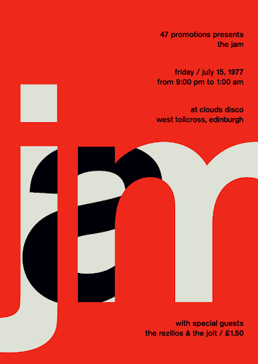
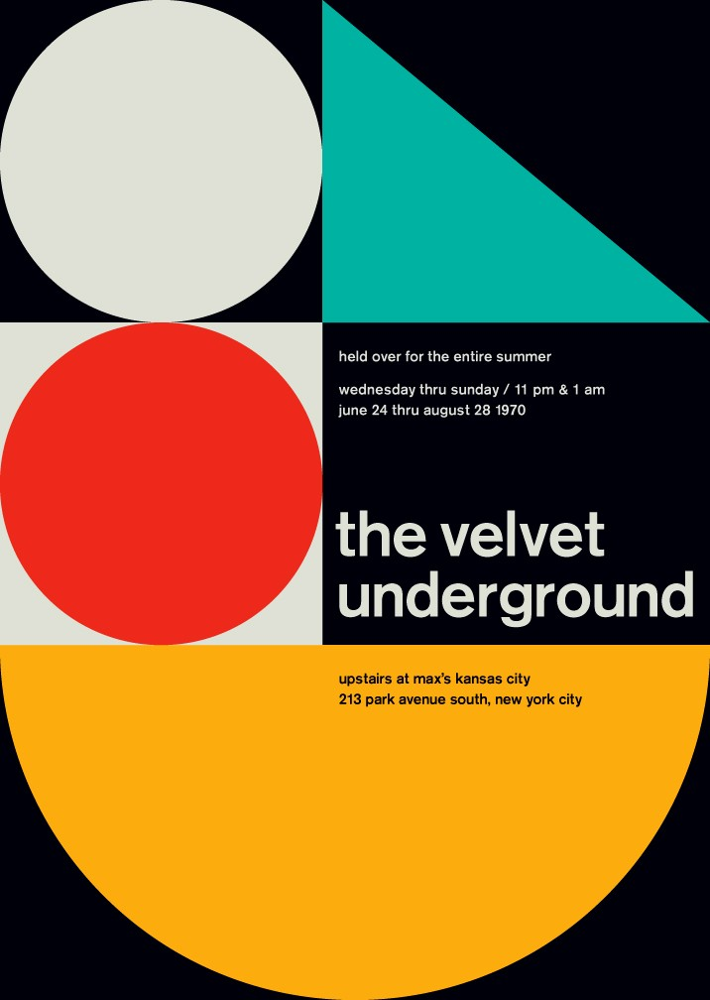

Description du projet
Pour ce projet de site internet, nous désirons explorer le web design et plus précisément des
animations stylistiques avec de la typographie. Nous voulons utiliser le design typographique suisse
et nous concentrer sur l'animation de typographies. Le sujet du site portera lui-même sur le design
typographique suisse. Les effets sur l'écriture apparaîtont lorsque l'on fera défiler les pages. Nous
désirons également créer un effet de parallaxe avec les textes et images que nous voulons présenter. Nous
visons un résultat élégant avec certains éléments visuels travaillés dans le but de révéler du texte.
Techniques utilisées
Nous allons explorer la technique du parallaxe pour le défilement du contenu
du site. Nous voudrions nous inspirer de Jefferson
Hack qui fait cet effet à merveille. Nous aimerions également explorer l'effet d'un texte
qui défile et jouer sur son format plein et son format tracé.
Inspiration
Voici quelques inspirations de design qui nous intéressent pour la conception du site web.


